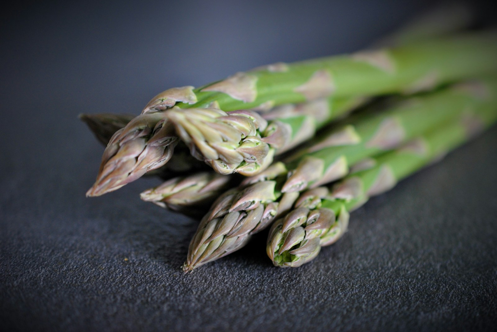

POMLAD01 / Z VRTA NA MIZO
Šparglji
Nežen začetek sezone. Šparglji se lepo podajo v rižoto, testenine ali na ponev, kjer pride njihov okus najbolj do izraza.
April–junijPovprašaj
Najlepši okusi rastejo z letnimi časi. Šparglji, jagode, zelenjava in dobrote v kozarčku – odkrijte svet Posestva Najin vrt.
 MAJHNE DOBROTE. VELIKO OKUSA.
MAJHNE DOBROTE. VELIKO OKUSA.Od prvih pomladnih špargljev do jagod in zelenjave. Spoznajte pridelke ter izberite, o čem želite izvedeti več.

POMLADNežen začetek sezone. Šparglji se lepo podajo v rižoto, testenine ali na ponev, kjer pride njihov okus najbolj do izraza.
POZNA POMLAD · POLETJEZa skledo svežega sadja, domačo sladico ali sladek prigrizek. Zrelost in razpoložljivost jagod narekujeta vreme in sezona.
 POLETJE · JESEN
POLETJE · JESENOsnova preprostih domačih jedi. Za juhe, omake in pečeno zelenjavo, pri katerih šteje dober okus osnovnih sestavin.

V Podvinu pri Polzeli ima vsaka sezona svoje mesto na mizi.
Ponudba Posestva Najin vrt povezuje sveže pridelke in predelane dobrote. Spletna predstavitev vas popelje od izbire pridelkov do informacij za neposreden stik s posestvom.
Za aktualen izbor, količine in prevzem se vedno dogovorite neposredno. Tako veste, kaj je na voljo prav takrat, ko načrtujete svoj obisk.
Več o nasPoglejte ponudbo in nam povejte, kateri pridelki vas zanimajo.